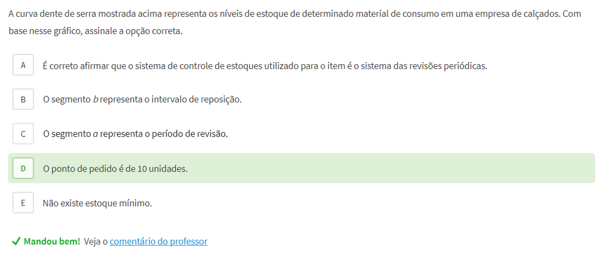
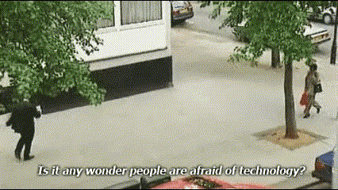
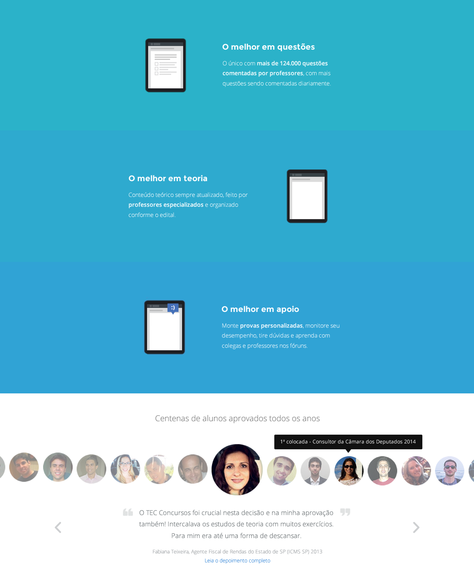
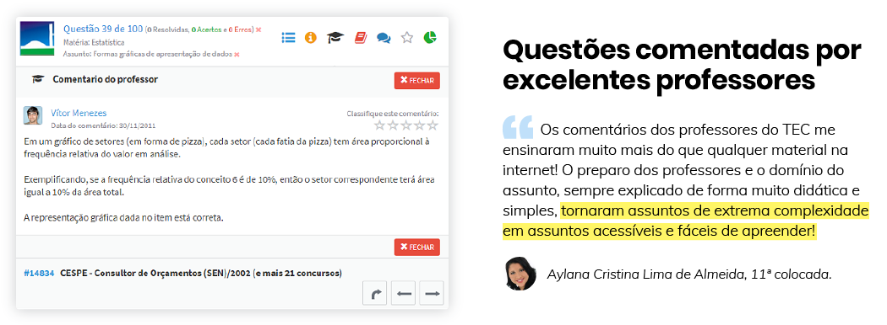

Connecting the dots
We defined user base growth as our end goal. I ran a full usability audit and heard from users past and current about their frustrations and desires.
We knew we had to make everything simpler and easier, but how exactly would that translate into more signups?
Causal analysis showed that this would only work if our interventions resulted in users becoming more confident in their performance, and specially in more people actually passing exams. Improving user performance and performance awareness then became the main focus of our work.
We did this by introducing better onboarding to help familiarize the user with what the platform offered, and a dashboard where they could assess their performance and evolution. This allowed users to have greater confidence on Tec even before passing their exams.
Performance at every turn
In addition, to learn effectively, users need all the brainpower they can get. For this, reducing cognitive load throughout the user experience was paramount.
I developed a design system light on chrome and worked with users and stakeholders to make flows intuitive and efficient.

High-tech and human
As the name suggests, Tec branded itself as a high-tech tool. This was its strength, and it was a unique proposition in the market. However, this proved to be a double-edged sword, as many found it intimidating.

We didn't want to lose the high-tech edge, so we balanced it with a humanized brand:
-
A vibrant color palette for the brand and appropriate counterparts for the UI.
-
A new logo featuring a hand-drawn symbol along with a lowercase, rounded wordmark.
-
Liberal use of humanistic elements on the website, ads, and social media, such as illustrations, animations, photographs and quotes of real teachers, users, and staff.

For example, for the features page, I used testimonials from users who had already passed their exams, making it easier for prospective users to connect the features to their real-world value.

Communicating the value of features in the users' own words also allowed us to draw attention to things that would sound conceited if we'd said it ourselves 🙂.
No one wants a redesign
Our last major concern was that this was already a community of thousands and, even though users had many suggestions and complaints, no one wants a redesign. We want things to be just as they are, only better.
So if we didn't conduct this carefully, we could have a very costly revolt on our hands. There were other big players in that space and switching costs were not high. One disappointing change and the shop across the street would start to look a lot more appealing.
How we did it
We decided on 4 measures to increase our odds of success:
-
Change would be incremental. The complete transformation, including not only the redesign but the planned new features, took place over the course of about 2 years.
-
As often as possible, change would come in the form of, or accompanied by, fixing known bugs and addressing common complaints. This meant they would often be received with some level of built-in approval.
-
We kept the "old version" around for those who preferred it. We wanted users to want to make the switch instead of feeling like they had to.
-
We made a point to listen to users every step of the way.
{kind=link}
{kind=link}
{kind=link}
{kind=link}
{kind=link}
{kind=link}
{kind=link}
{kind=link}